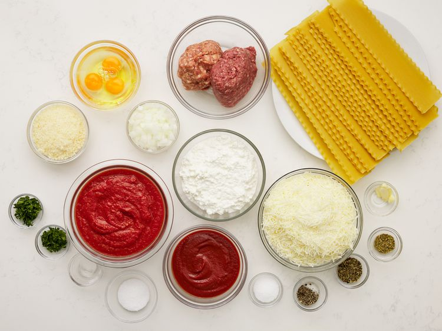
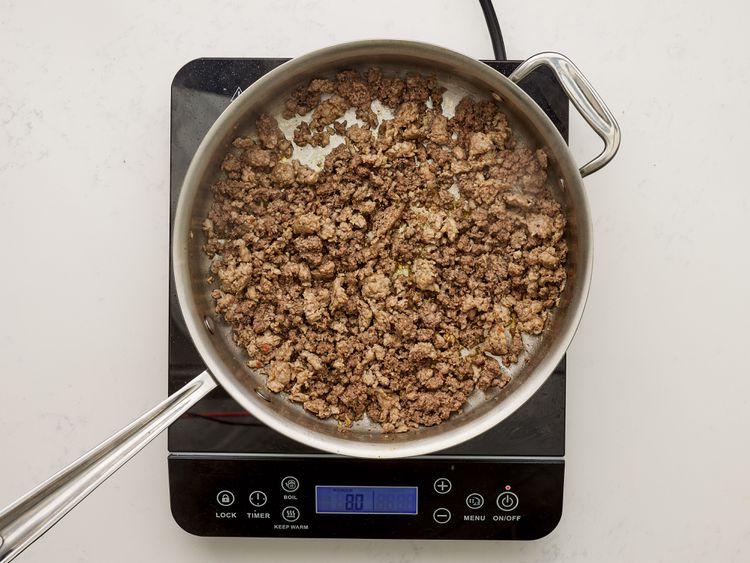
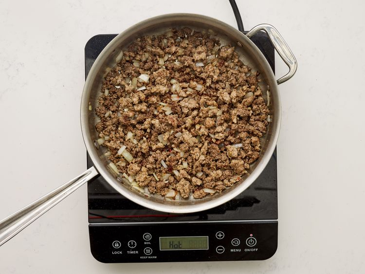
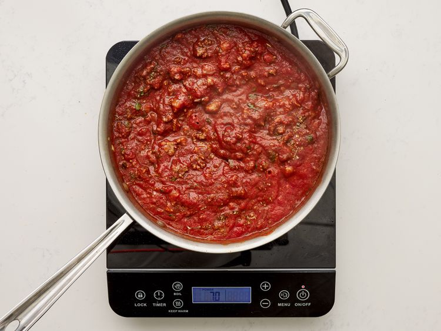
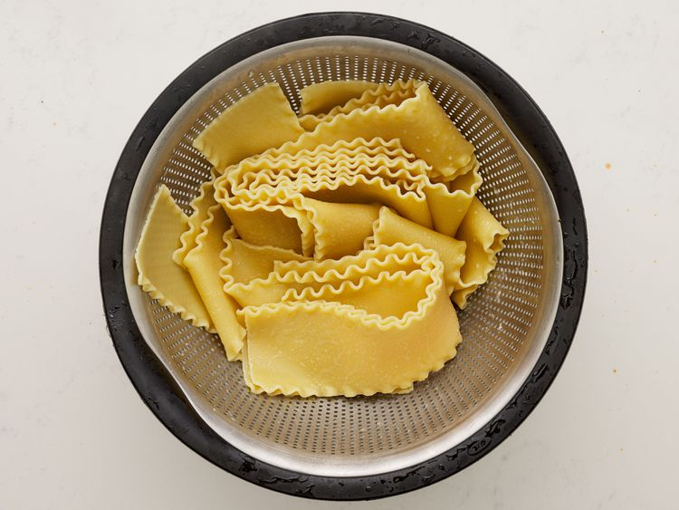
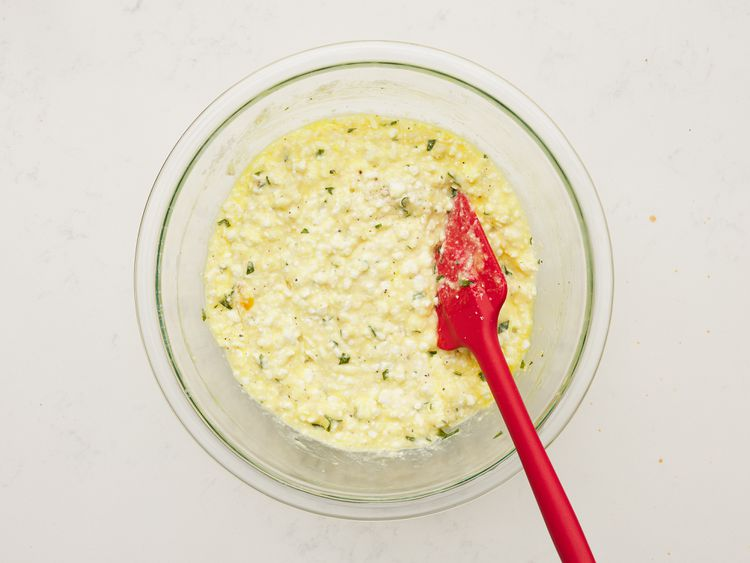
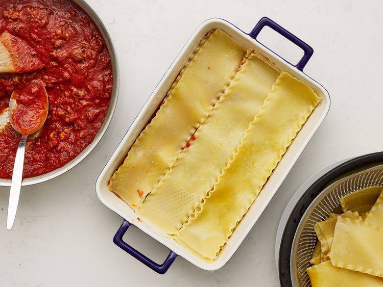
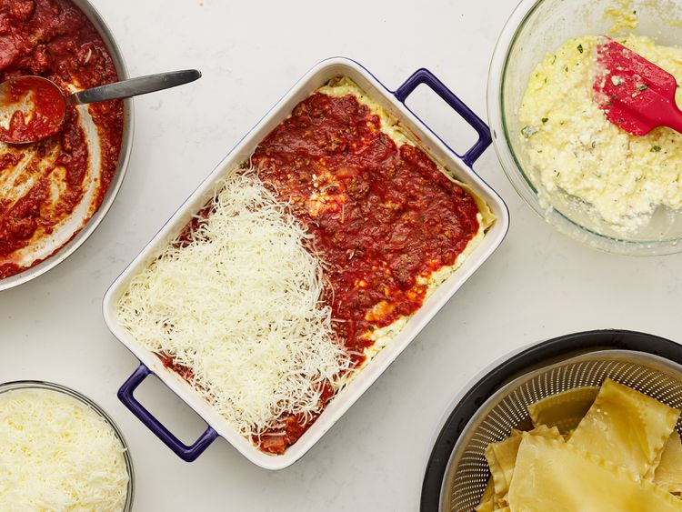
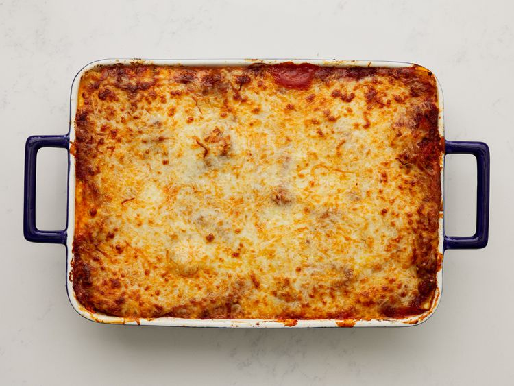
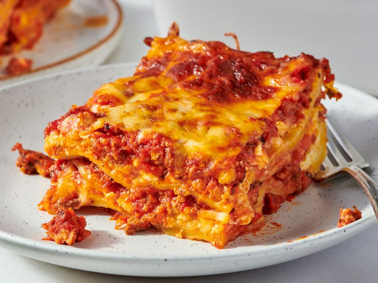

Homemade lasagna isn't as hard to make as it seems. While the layers may look impressive, the process is simple and comes together step by step. With rich meat sauce, creamy cheese, and tender noodles, every bite is packed with classic Italian flavor. Once you try this recipe, it is sure to become a go-to for family dinners, holidays, or any time you want a crowd-pleasing meal.
Gather all ingredients.

Combine pork and ground beef in a large, deep skillet over medium-high heat; cook and stir until browned and crumbly, 5 to 7 minutes.

Add onion and cook until translucent, about 5 minutes.

Stir in crushed tomatoes, tomato sauce, 1 tablespoon fresh parsley, garlic, basil, salt, oregano, and sugar. Reduce heat to medium-low and simmer, stirring occasionally, for 30 minutes.

While the sauce is simmering, bring a large pot of lightly salted water to a boil. Cook lasagna noodles in the boiling water, stirring occasionally, until tender yet firm to the bite, 8 to 10 minutes. Drain and set aside. While the noodles are cooking, preheat the oven to 375 degrees F (190 degrees C).

Mix cottage cheese, Parmesan cheese, eggs, remaining 1 tablespoon fresh parsley, salt, and pepper in a large bowl until combined.

Assemble lasagna: Spread a spoon or two of sauce over the bottom of a 9x13-inch baking dish just to to coat it. Place two layers of noodles over the sauce to cover.

Layer with 1/2 of the cheese mixture, 1/2 of the remaining sauce, and 1/2 of the mozzarella cheese. Repeat layers once more using the remaining noodles, cheese mixture, sauce, and mozzarella. Cover the baking dish with aluminum foil.

Bake in the preheated oven for 30 to 40 minutes. Remove the foil and bake until cheese is golden brown, 5 to 10 more minutes.

Remove from the oven and let stand for 10 minutes before cutting and serving.
